<!DOCTYPE html>
<html lang="en">
<head>
    <meta charset="UTF-8">
    <meta name="viewport" content="width=device-width, initial-scale=1.0">
    <title>scarface</title>
</head>
<body style="background-color:black;">
    
</body>
</html>
<h1 style="background-color: red;">ScarFace--------------------------------------------------------------------------------------------------------------------------------------------------------------------</h1>
<p style="color: white;">ნაწიბურისებრი (ScarFace) სახის სახელით ცნობილი ლომი კენიის მასაი მარას ეროვნული ნაკრძალის ლეგენდარული მამრი ლომი იყო, რომელიც ცნობილია მარჯვენა თვალზე გამოკვეთილი ნაწიბურით, რომელმაც მას სახელი შესძინა. 2007 წელს დაბადებული, იგი ცნობილი იყო თავისი ძალითა და ხანგრძლივი მეფობით, 2021 წლის 11 ივნისს, 14 წლის ასაკში, ბუნებრივი სიკვდილით მშვიდობიანად გარდაიცვალა. ნაწიბურისებრმა სახემ მსოფლიო აღიარება მოიპოვა თავისი ძალისა და გადარჩენის უნარების წყალობით, გამოჩნდა დოკუმენტურ ფილმებში და მიიზიდა ტურისტები მასაი მარაში.

ცხოვრება და მემკვიდრეობა
დაბადება და სახელი: 2007 წელს დაბადებულმა, მან სახელი „ნაწიბურისებრი სახე“ 2012 წელს ტერიტორიული ბრძოლის დროს თვალის მძიმე დაზიანების შემდეგ მიიღო.
ლეგენდარული ძალა: ის მასაი მარაში დომინანტური ძალა იყო და თითქმის ათწლეულის განმავლობაში მართავდა, რაც გაცილებით მეტია, ვიდრე საშუალო ლომის მეფობა.
აღსანიშნავი მიღწევები: იგი ცნობილი იყო თავისი სიმამაცით და სასტიკი ბრძოლების გადარჩენის უნარით, სავარაუდოდ, მან 400-ზე მეტი აფთარი და 130 მეტოქე მამრი ლომი მოკლა.
საერთაშორისო პოპულარობა: ნაწიბუროვანი სახის შთამბეჭდავმა ცხოვრებამ და ქარიზმატულმა პიროვნებამ ველური ბუნების მოყვარულთა და ტურისტებში მნიშვნელოვანი ყურადღება მიიპყრო, რამაც ის მსოფლიოში ერთ-ერთ ყველაზე ცნობილ ლომად აქცია.
მშვიდი დასასრული: იგი მშვიდობიანად გარდაიცვალა ბუნებრივი მიზეზებით 2021 წლის 11 ივნისს, 14 წლის ასაკში, რაც იშვიათი შემთხვევაა გარეული ლომისთვის.</p>

<h1 style="background-color: red;">killed animal---------------------------------------------------------------------------------------------------------------------------------------------------------------</h1>
<p style="color: white;">ლომ ნაწიბურისებრი სახის შესახებ გავრცელებული ინფორმაციით, 400-ზე მეტი ჰიენა და 130 მეტოქე მამრი ლომია. ეს რიცხვები ფართოდ არის მოყვანილი სოციალურ მედიაში პოსტებსა და სტატიებში მასაი მარას ლეგენდარული ლომის შესახებ. თუმცა, ზოგიერთი წყარო ამ ციფრებს გაზვიადებულ მითებად აფასებს და ხაზს უსვამს, რომ ნაწიბურისებრი სახე პატივცემული და ხატოვანი ლომი იყო სხვა მიზეზების გამო, როგორიცაა მისი სიცოცხლის ხანგრძლივობა და საბრძოლო ნაწიბურები და არა გამოგონილი რიცხვების გამო.


ცნობილი რიცხვები


ჰიენები: 400-ზე მეტი


მეტოქე მამრი ლომები: 130-ზე მეტი


მითების უარყოფა

ბევრი ცნობა ხაზს უსვამს, რომ ეს ციფრები გაზვიადებულია და არ არის დადასტურებული ისეთი სანდო წყაროებით, როგორიცაა BBC ან National Geographic, რომლებმაც ინტენსიურად გააშუქეს ნაწიბურისებრი სახის ცხოვრება.

ზოგიერთი მკვლევარი ვარაუდობს, რომ ნაწიბურისებრი სახის ნამდვილი მემკვიდრეობა მისი შესანიშნავი გამძლეობა, სიცოცხლის ხანგრძლივობა და ხატოვანი სტატუსია და არა კონკრეტული, პოტენციურად შეთხზული რიცხვები.


მისი ოსტატობის სხვა ცნობები


დამარცხებული ზრდასრული ბეჰემოთები: ზოგიერთი ისტორიით, ის იყო ერთადერთი ლომი, რომელმაც ზრდასრული ბეჰემოთები ერთ-ერთზე ბრძოლაში დაამარცხა.


ნიანგების განდევნა: ასევე ამბობენ, რომ მან ნიანგები თავისი ტერიტორიიდან განდევნა, რათა თავისი სიამაყე დაეცვა.
გადაურჩა დაზიანებებს: ცნობილია, რომ 2012 წელს მან თვალის სერიოზული დაზიანება გადაიტანა და ათი წლის განმავლობაში განაგრძობდა თავის ტერიტორიაზე დომინირებას.
დასკვნა
მიუხედავად იმისა, რომ ნაწიბუროვანი სახე უდავოდ ძლიერი და ლეგენდარული ლომი იყო, 400 ჰიენას და 130 მამრი ლომის მოკვლის შესახებ გავრცელებული ინფორმაციით, მისი ნამდვილი ისტორია მასაი მარაში ძალაუფლების სიმბოლოდ ქცეული გამძლეობის, დომინირებისა და ხანგრძლივი, შთამბეჭდავი მმართველობის ისტორიაა.</p>

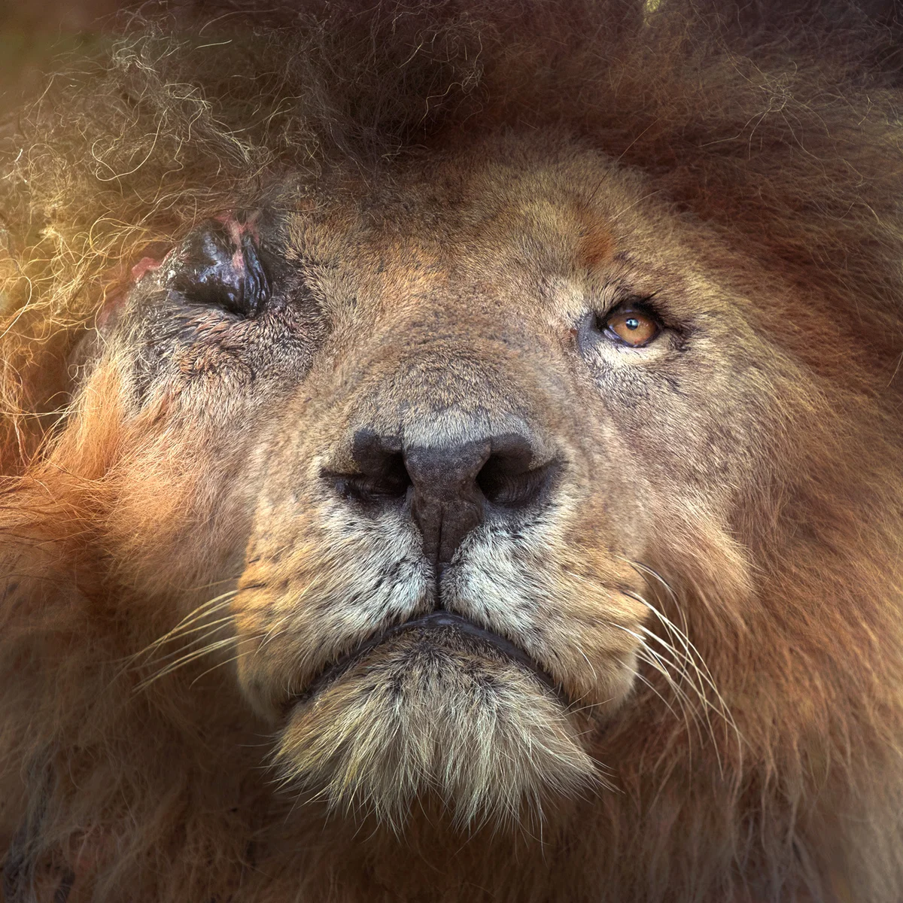
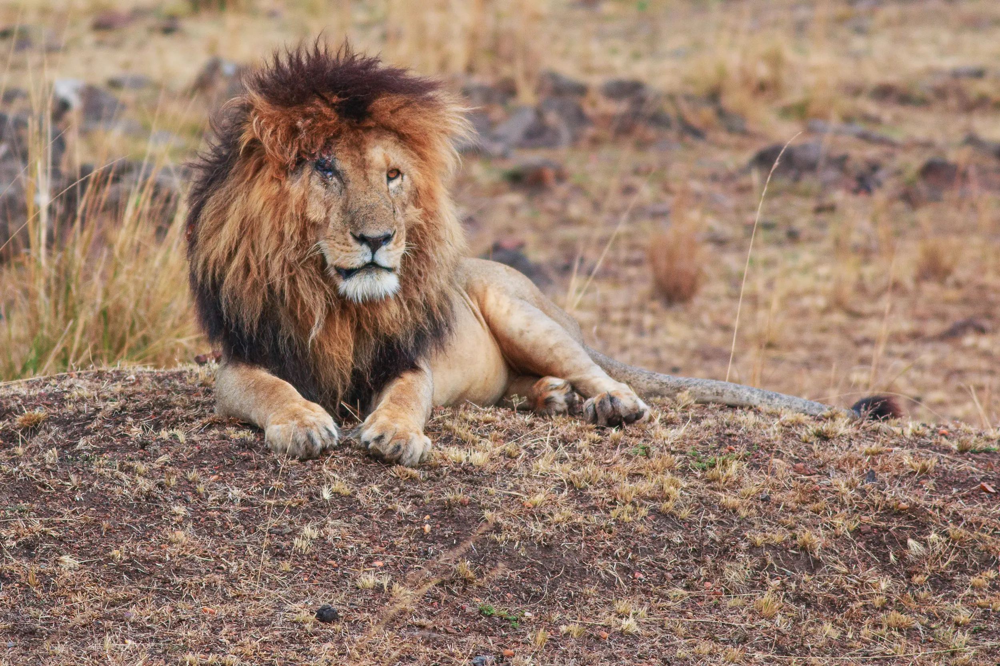
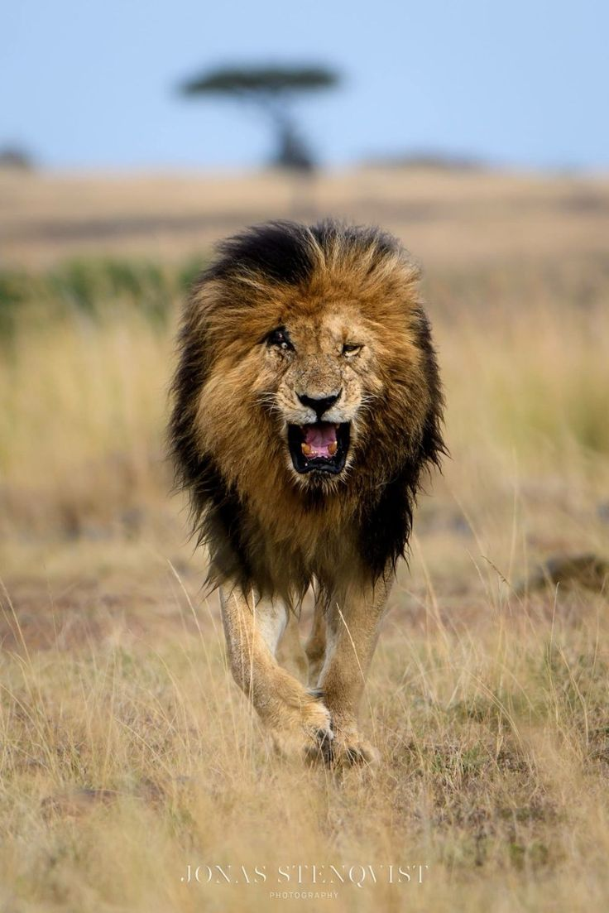


<h1  style="background-color: red;"> Morani 
(scarface brother)-----------------------------------------------------------------------------------------------------------------------------------------------</h1>
<p style="color: white;">ლომი სახელად მორანი, რომელიც კენიაში (მასაი მარას ეროვნულ პარკში) ყველაზე ხანდაზმულად არის ცნობილი, ვიკიპედიაში არ არის ჩამოთვლილი. Facebook-ზე მისი ძიებისას ის მოხსენიებულია, როგორც „კენიის ყველაზე ცნობილი ლომი“, გამძლეობის სიმბოლო, რომელიც ყველაზე ხანდაზმული 14 წლის ასაკში გახდა, თუმცა ვიკიპედიაში არ არის ჩანაწერი, როგორც ეს ქაბულის ზოოპარკიდან კიდევ ერთი ცნობილი ლომის, მარჯანის შემთხვევაშია.
მორანის საჯაროდ დოკუმენტირებული „მოკლული ლომების რაოდენობა“ არ ჰქონდა, თუმცა, როგორც ცნობილი „ოთხი მუშკეტერის“ კოალიციის წევრმა, მან მრავალ ბრძოლაში მიიღო მონაწილეობა. ის ცნობილი იყო, როგორც კენიის მასაი მარას ნაკრძალის ერთ-ერთი ყველაზე ხანდაზმული მამრი ლომი და წარმოუდგენელი ძალა და გამძლეობა გამოავლინა, როდესაც საკუთარ სიამაყესთან სასტიკი ბრძოლა მოიგო ჰიპოპოტამის მოსაკლავად, რითაც აჩვენა თავისი დომინირება და გადარჩენის უნარები.

მორანის ცხოვრება და მემკვიდრეობა
„ოთხი მუშკეტერის“ წევრი:
მორანი ოთხი ძმის კოალიციის წევრი იყო, მათ შორის ლეგენდარული ნაწიბუროვანი სახე, რომელიც მასაი მარას უზარმაზარ ტერიტორიებს მართავდა.

ძალისა და გადარჩენის სიმბოლო:
მიუხედავად იმისა, რომ ეს „მოკლული ლომების დათვლის“ მთავარი თემა არ იყო, მორანის ბრძოლამ საკუთარი სიამაყისგან ჰიპოპოტამის მოსაპოვებლად წარმოაჩინა მისი სასტიკი დომინირება და რთული შეტაკებების გადატანის უნარი, რამაც პატივისცემა დაიმსახურა.
დღეგრძელობა:
მორანი ძალიან მოხუც მამრ ლომად იქცა, რაც იშვიათი მიღწევაა ველური მამრი ლომისთვის, რომელიც მუდმივ კონკურენციასა და კონფლიქტს აწყდება.
ლეგენდარული გმირობების მოწმე:
მორანი იყო ნაწიბუროვანი სახის თანამედროვე, ლომი, რომელიც ცნობილია ასობით ჰიენის მოკვლით, 130-ზე მეტი მეტოქე მამრის და კონკურენტი ნიანგებისა და ბეჰემოთების დამარცხებითაც კი.
მიუხედავად იმისა, რომ მორანის მოკვლის კონკრეტული რაოდენობა არ არის ჩაწერილი, მისი ისტორია ხაზს უსვამს მის ლეგენდარულ სტატუსს და წარმოუდგენელ ძალას მასაი მარას ლომების პოპულაციაში.
</p>


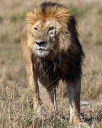
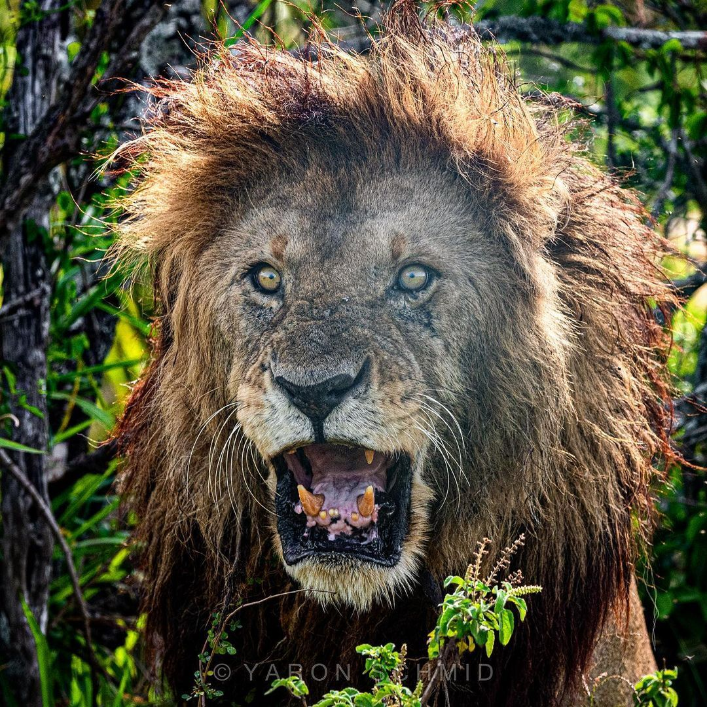
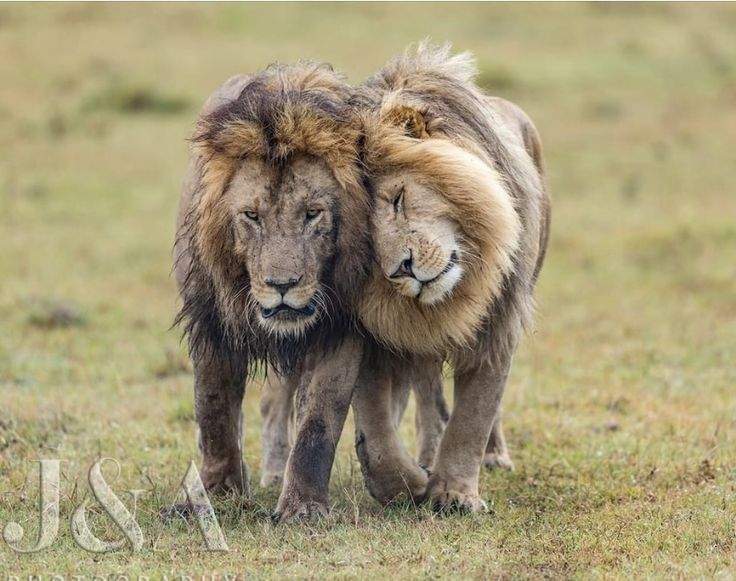


<h1 style="background-color: red;"> hunter
(scarface brother)------------------------------------------------------------------------------------------------------------------------------------------------</h1>

<p style="color: white;"> ჰანტერი ოთხი ლეგენდარული ძმიდან ერთ-ერთი იყო - ნაწიბურისებრ სახესთან, სიკიოსთან და მორანისთან ერთად - რომლებმაც ჩამოაყალიბეს ძლიერი კოალიცია, რომელიც ცნობილია როგორც „ოთხი მუშკეტერი“, რომელიც დომინირებდა კენიაში, მასაი მარაში დაახლოებით 2011 წლიდან ნაწიბურისებრი სახეს გარდაცვალებამდე, 2021 წელს. ნაწიბურისებრ სახეს სახელი ეწოდა მარჯვენა თვალზე არსებული გამორჩეული ნაწიბურის გამო, რაც 2012 წელს ტერიტორიული ბრძოლის შედეგი იყო.
ოთხი მუშკეტერი
ნაწიბურისებრი სახე:
Facebook-ის ცნობით, ძმებიდან ყველაზე ცნობილი, რომელიც ცნობილია თავისი ნაწიბურითა და შთამბეჭდავი მუქი ფაფარით.
ჰანტერი:
ოთხიდან ერთ-ერთი, რომელიც ცნობილია თავისი ნადირობის ოსტატობით.
სიკიო:
კოალიციის კიდევ ერთი ძმა.
მორანი:
YouTube-ის ცნობით, მეოთხე ძმა, კოალიციის ლიდერი.
მათი მმართველობა
ძმებმა მასაი მარაში Marsh Pride დაახლოებით 2011 წელს დაიკავეს.
ისინი უზარმაზარ ტერიტორიას მართავდნენ და ცნობილი იყვნენ თავიანთი ძალით, გამძლეობითა და შეუდარებელი სისასტიკით.
ჯგუფი ფოტოგრაფებისა და ველური ბუნების მოყვარულების მიერ აღინიშნა და მასაი მარას კულტურულ სიმბოლოდ იქცა.

მემკვიდრეობა
ნაწიბურიანმა სახემ განსაკუთრებით დიდხანს იცოცხლა ველური მამრი ლომის ნაცვლად და 2021 წელს, 14 წლის ასაკში, ბუნებრივი სიკვდილით მშვიდობიანად გარდაიცვალა.
ნაწიბურიანი სახისა და მისი ძმების, ოთხი მუშკეტერის ლეგენდა კვლავ შთააგონებს და მასაი მარას შესახებ დოკუმენტური ფილმებისა და ისტორიების საშუალებით იზიარებს.</p>

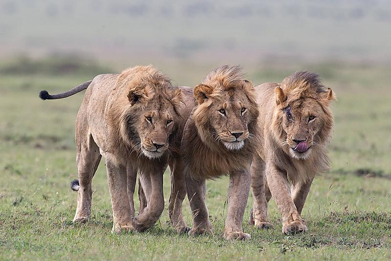

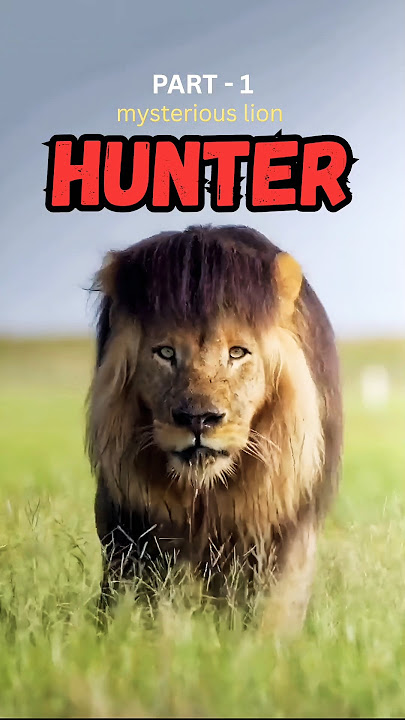

<h1 style="background-color: red;">Sikio(scarface brother)--------------------------------------------------------------------------------------------------------------------------------------------------</h1>

<p style="color: white;">„სიკიო“ (ან სკიო, სკიო კალი) ოთხი ცნობილი ლომი ძმიდან ერთ-ერთია, რომლებიც კენიის მასაი მარას ეროვნულ ნაკრძალში ბატონობდნენ, რომლებიც „ოთხი მუშკეტერი“ იყვნენ. თავის ძმებთან - ნაწიბუროვან სახესთან, მორანისთან და ჰანტერთან ერთად, სკიო ცნობილი იყო თავისი სასტიკი ბუნებით და იმით, რომ 2011 წელს Marsh Pride-ის ტერიტორია დაიპყრო.
ძირითადი ფაქტები სკიოს შესახებ:
„ოთხი მუშკეტერი“:სკიო, სკართან, მორანისთან და ჰანტერთან ერთად, მასაი მარას ერთ-ერთი ყველაზე ცნობილი და დომინანტი ლომი იყო.
ტერიტორიული ომები:
მათ დაიპყრეს და აკონტროლებდნენ ჭაობის ტერიტორიის ტერიტორიას, რამაც ისინი დიდად ცნობილი და პატივსაცემი გახადა.
სიკვდილი ტრავმით:
2020 წელს სკიომ ნადირობის მცდელობისას მეჭეჭის ეშვებით სასიკვდილო ჭრილობა მიიღო, რამაც მისი სიკვდილი გამოიწვია.</p>

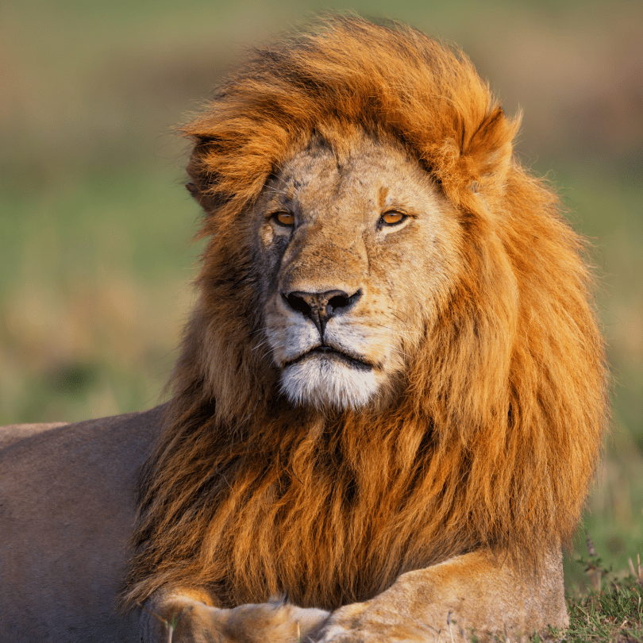
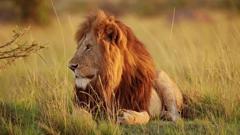
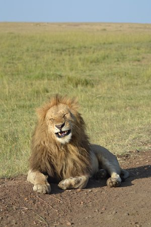

<h1 style="background-color: red;">Marsh Pride----------------------------------------------------------------------------------------------------------------------------------------------------------------</h1>
<p style="color: white;">„მარშ პრაიდი“ ეხება კენიაში, მასაი მარას ეროვნულ ნაკრძალში მდებარე ლომების კონკრეტულ ჯგუფს, რომელიც ცნობილია როგორც ველური ბუნების შესახებ სერიალ „დიდი კატის დღიური“ და სხვა მსგავსი გადაცემების ყველაზე ხანგრძლივი მონაწილე ვარსკვლავები, რომლებიც ათწლეულების განმავლობაში ასახავდნენ მათ ცხოვრებას.
მარშ პრაიდის ძირითადი ასპექტები:
ადგილმდებარეობა:
ისინი კენიაში, მასაი მარას ეროვნულ ნაკრძალში დაფუძნებული ლომების ცნობილი ჯგუფს წარმოადგენენ.
მედიის პოპულარობა:
მათი ცხოვრება ფართოდ არის დოკუმენტირებული ველური ბუნების პროგრამებში, განსაკუთრებით BBC-ის „დიდი კატის დღიურში“, რამაც მათ გლობალური აღიარების მოპოვებაში დაეხმარა.
მემკვიდრეობა:
ჯგუფს ველური ბუნების ექსპერტების მიერ გადაღებისა და შესწავლის ხანგრძლივი ისტორია აქვს, რაც მას მსოფლიოში ერთ-ერთ ყველაზე ცნობილ ჯგუფად აქცევს.
ცნობილი პიროვნებები:
ლეგენდარული ლომები, როგორიცაა ნაწიბუროვანი სახე, თავის დროზე მარშ პრაიდის გამოჩენილი წევრები და დომინანტი მამრები იყვნენ.
დაკავშირებული მედია:
მათი მიმდინარე ისტორიები ასევე აღწერილია სხვა შოუებში, როგორიცაა Animal Planet-ის „დიდი კატის ისტორიები“.</p>


